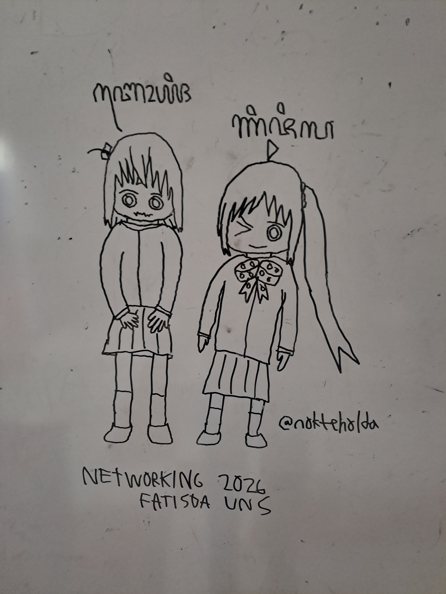
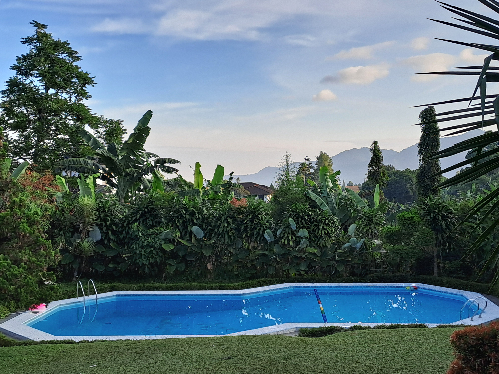
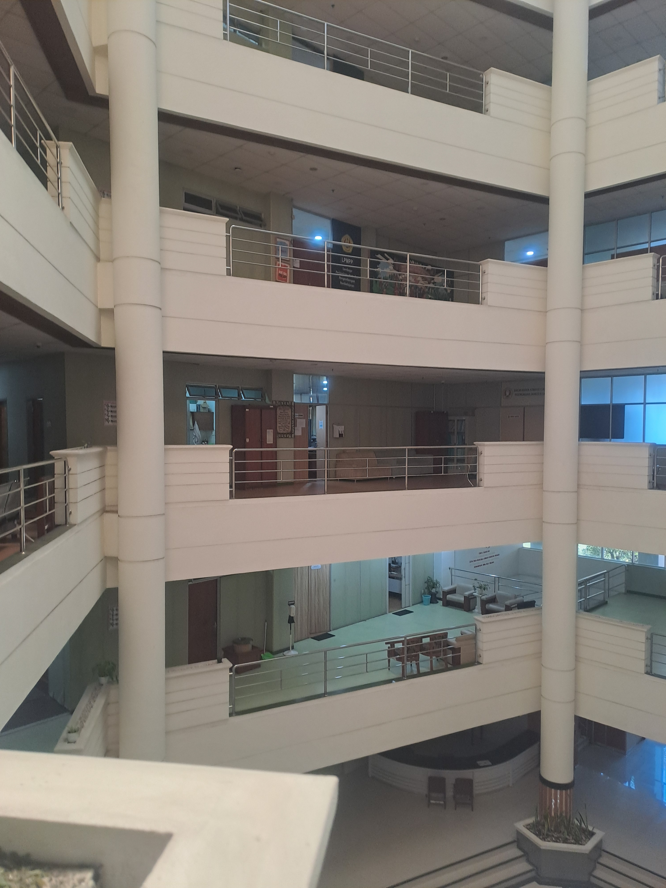
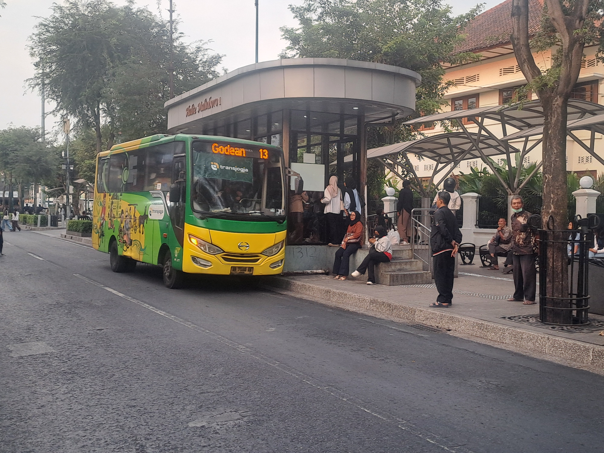
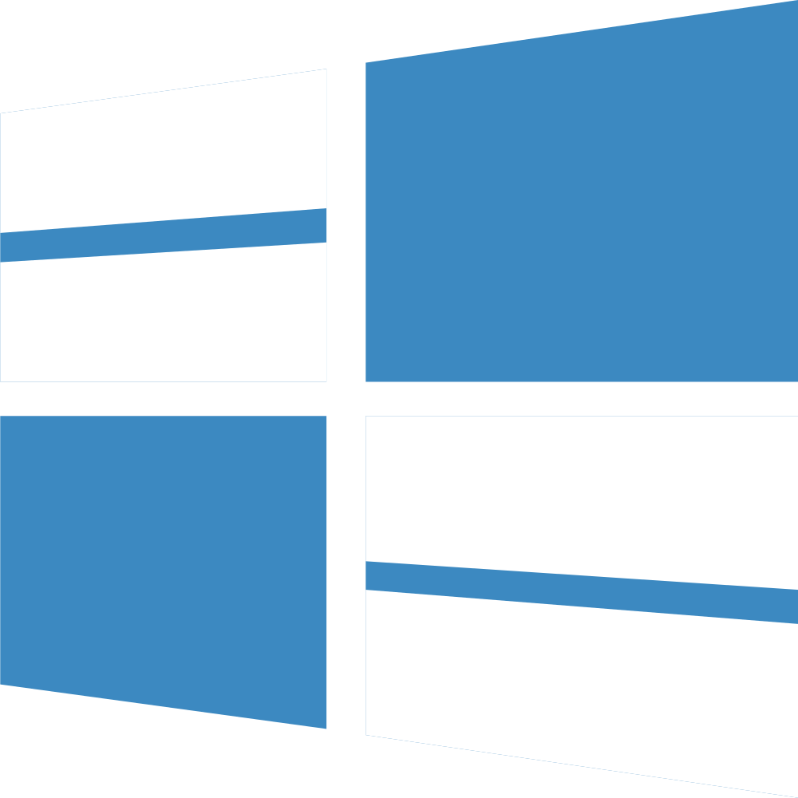

Bendera
Bendera yang dibuat untuk Worldubuilding, Dunia Fiksi, atau EarthMC


Bendera Civusia


Bendera Kustom Asia Tengah
Fotografi/Gambaran
Beberapa foto yang dipotret/digambar oleh saya sendiri

Gambaranku di papan tulis sebelum dimulainya acara Networking

Pemandangan Villa Bumina Ayi di Cisarua, Bogor

Di dalam gedung Rektorat Universitas Pembangunan Nasional "Veteran" Yogyakarta

Bus Transjogja berhenti di Terminal Mailoboro 1
Logo
Beberapa logo vektor yang didesain oleh saya sendiri
Narmada Corp
NewCore2419
Transnational Ice Highway

Versi Windows Fiktif (Windows Shiga)
Logo Random
OS Mockups
Sebuah komunitas niche yang kebanyakan membuat bootscreen OS fiktif (semuanya telah dimasukkan ke video OS Mockups-nya nokteholda)

Windows Acrie Bright

Windows Codename Ryoku

Windows Codename Vermillion

Windows NeonSpace

Windows Offcourse

Windows Orchidane

Windows Pasteur

Windows Shiga

Windows XP 2007 Reconstruction
Peta
Beberapa peta yang dibuat menggunakan paint.net ataupun QGIS

Peta Negara Timur Jauh (FE, EarthMC)